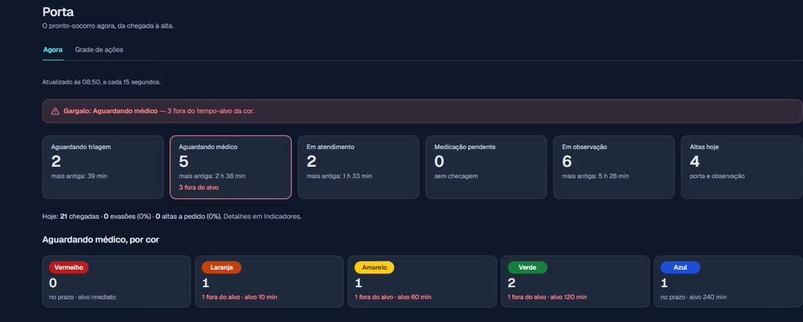

Chefe Coruja
Prontuário e gestão para a rede pública de saúde: da porta à alta, da UPA à UBS.
O que muda na rede: a recepção não duplica paciente, a enfermagem classifica pelo protocolo da unidade, o médico recebe os sinais da triagem sem redigitar, a regulação tem prazo e alerta, a UBS acompanha seus programas, e o gestor vê agora quem espera, onde está o gargalo e quanto do leito está ocupado. Tudo com autor, horário e uma trilha que denuncia adulteração.
Pronto e em uso
Recepção e triagemBusca antes de cadastrar, prioridade legal automática, classificação de risco da enfermagem com o protocolo da unidade e chamada em painel.
Atendimento no pronto-socorroSOAP, CID sugerido pela hipótese, NEWS2, prescrição estruturada com aviso de alergia e peso, exames, atestado, receita e desfechos.
MedicaçãoAprazamento, checagem com nome e hora, motivo para não feito e recusado, interações críticas e alta vigilância.
Observação, internação e leitosPrazo de 6 horas na observação, evolução, mapa de leitos com reserva, higienização e bloqueio com motivo.
Escala e presençaSó entra quem está na escala; check-in com localização e justificativa; trocas aprovadas pelo gestor.
GestãoPorta ao vivo, indicadores com filtros e CSV, evasão com motivo e perguntas em português, sem nome de paciente na resposta.
RegulaçãoConsulta, exame, leito e transferência para a Central, com prioridade, prazo, alerta de destino sem resposta e mapa de vagas.
Atenção básica (UBS)Agenda, escuta inicial, encaminhados, Hiperdia nas regras C5 e C4, pré-natal e puericultura.
Faturamento SUSA conta nasce na porta e na internação; BPA, AIH, APAC e glosas; a pendência trava o fechamento.
Apoio clínico232 ferramentas revistas contra as diretrizes mais recentes e aprovadas pelo responsável técnico; IA que responde com fonte. O sistema não sugere dose.
Diferenciais
- Segurança no banco de dados, não só na tela: cada acesso conferido no servidor.
- Segundo fator em todo acesso e tela que bloqueia sozinha depois de 10 minutos.
- Auditoria encadeada: quem fez, quando e por quê, inclusive quem abriu um prontuário antigo.
- LGPD: dados em São Paulo, cópia diária cifrada guardada por 20 anos (Lei 13.787/2018).
- IA sem identidade: os identificadores do paciente saem antes da consulta.
- A decisão clínica é do profissional: a cor é da enfermagem, a dose é do médico.
- Sem internet, os registros essenciais seguem, com plano de contingência.

Tela real da Porta, na rede de demonstração, com pacientes e equipe fictícios.
Fora da oferta atual, sem data
Envio à RNDS e assinatura digital ICP-Brasil.